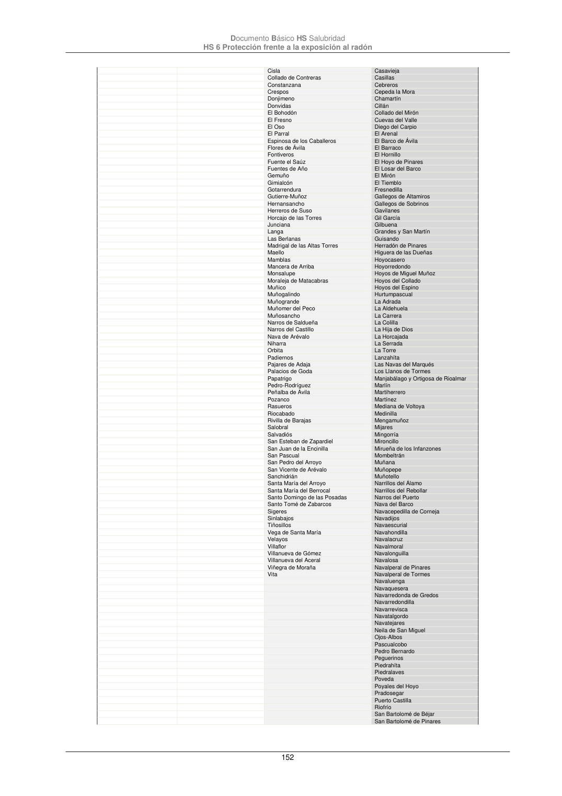

DB-HS Salubridad · edición 2022-06-14 · capa oficial
Documento DB-HS-oficial · SHA-256 del PDF 68df3caacc95f71aee2ec1ba7b2c65ae66155c21e3a8785521b8fdd4fd640d3b
Página física 152 de 184.
Copia fiel del PDF fuente · Fuente oficial
Ficha de la disposición en la fuente oficial
Formato: Texto de la página (Markdown)
Documento Básico HS Salubridad HS 6 Protección frente a la exposición al radón 152 Cisla Casavieja Collado de Contreras Casillas Constanzana Cebreros Crespos Cepeda la Mora Donjimeno Chamartín Donvidas Cillán El Bohodón Collado del Mirón El Fresno Cuevas del Valle El Oso Diego del Carpio El Parral El Arenal Espinosa de los Caballeros El Barco de Ávila Flores de Ávila El Barraco Fontiveros El Hornillo Fuente el Saúz El Hoyo de Pinares Fuentes de Año El Losar del Barco Gemuño El Mirón Gimialcón El Tiemblo Gotarrendura Fresnedilla Gutierre-Muñoz Gallegos de Altamiros Hernansancho Gallegos de Sobrinos Herreros de Suso Gavilanes Horcajo de las Torres Gil García Junciana Gilbuena Langa Grandes y San Martín Las Berlanas Guisando Madrigal de las Altas Torres Herradón de Pinares Maello Higuera de las Dueñas Mamblas Hoyocasero Mancera de Arriba Hoyorredondo Monsalupe Hoyos de Miguel Muñoz Moraleja de Matacabras Hoyos del Collado Muñico Hoyos del Espino Muñogalindo Hurtumpascual Muñogrande La Adrada Muñomer del Peco La Aldehuela Muñosancho La Carrera Narros de Saldueña La Colilla Narros del Castillo La Hija de Dios Nava de Arévalo La Horcajada Niharra La Serrada Orbita La Torre Padiernos Lanzahíta Pajares de Adaja Las Navas del Marqués Palacios de Goda Los Llanos de Tormes Papatrigo Manjabálago y Ortigosa de Rioalmar Pedro-Rodríguez Marlín Peñalba de Ávila Martiherrero Pozanco Martínez Rasueros Mediana de Voltoya Riocabado Medinilla Rivilla de Barajas Mengamuñoz Salobral Mijares Salvadiós Mingorría San Esteban de Zapardiel Mironcillo San Juan de la Encinilla Mirueña de los Infanzones San Pascual Mombeltrán San Pedro del Arroyo Muñana San Vicente de Arévalo Muñopepe Sanchidrián Muñotello Santa María del Arroyo Narrillos del Álamo Santa María del Berrocal Narrillos del Rebollar Santo Domingo de las Posadas Narros del Puerto Santo Tomé de Zabarcos Nava del Barco Sigeres Navacepedilla de Corneja Sinlabajos Navadijos Tiñosillos Navaescurial Vega de Santa María Navahondilla Velayos Navalacruz Villaflor Navalmoral Villanueva de Gómez Navalonguilla Villanueva del Aceral Navalosa Viñegra de Moraña Navalperal de Pinares Vita Navalperal de Tormes Navaluenga Navaquesera Navarredonda de Gredos Navarredondilla Navarrevisca Navatalgordo Navatejares Neila de San Miguel Ojos-Albos Pascualcobo Pedro Bernardo Peguerinos Piedrahíta Piedralaves Poveda Poyales del Hoyo Pradosegar Puerto Castilla Riofrío San Bartolomé de Béjar San Bartolomé de Pinares

Datos candidatos: compruebe celdas y notas en el PDF.